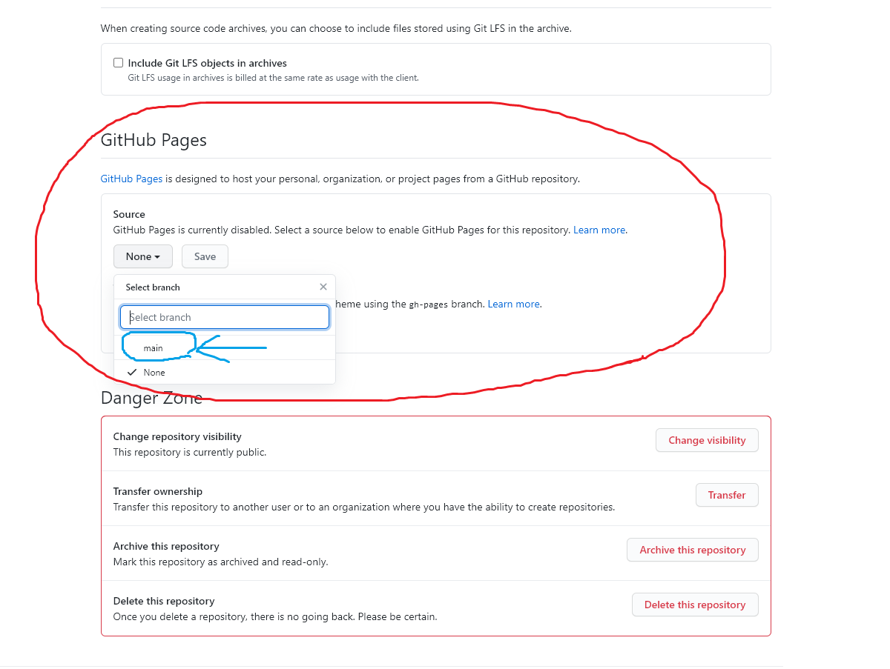

- 깃허브 메인사이트에 들어간다.
- Sign up을 눌러서 계정을 만들어 주자.
- New를 누르면 아래와 같은 상태가 되는데, name 적는 란에 적당히 적어주고,
아래에 있는
"add README file" 을 체크 후에(저는 안눌렀어요;) create repository 버튼을 누른다.
- repository 생성이 완료된다.
여기에 웹페이지에 필요한 html 파일을 업로드 하면 된다.
- 아래 보이는 곳에 파일을 드래그해서 업로드
- commit changes 클릭.
여러개의 파일 업로드도 가능하다.
html 파일 중 하나는 index.html 이라는 이름으로 설정하는 게 좋다.
웹 페이지에서 index라는 이름이 일종의 키워드인데, 웹페이지의 대문페이지라는 의미이다.
- 그 후에 오른쪽 위에 있는 setting을 클릭
- 아래로 스크롤을 하다 보면, 깃허브 페이지라는 곳이 있는데, 저기서 main을 선택

- 그 후에 아래와 같이 save를 눌러주게 되면, 윗 부분에 깃 허브를 서버로 이용해서 생성한 웹 페이지의 주소가 나온다.
업로드를 진행 상황을 볼려면 actions에 가보면 볼수있다. 올리자 마자 무지성으로 사이트를 들어가지는 말자.
업로드를 진행 상황을 볼려면 actions에 가보면 볼수있다. 올리자 마자 무지성으로 사이트를 들어가지는 말자.
---------------------------end---------------------------